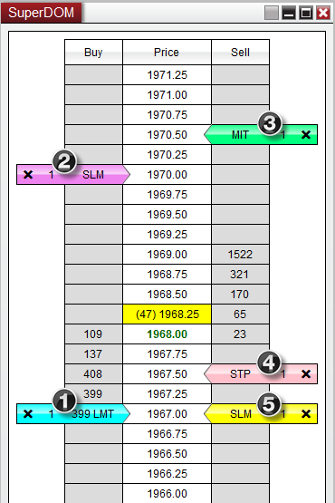
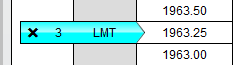
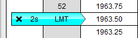
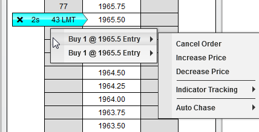
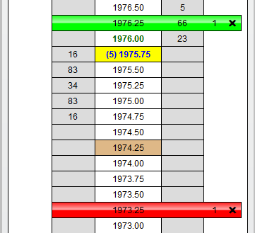

|
<< Click to Display Table of Contents >> Order Display |


|
Order Display
|
<< Click to Display Table of Contents >> Order Display |
|
Orders are displayed in a highly visual manner. Different order types and order objectives (stop loss or profit target orders) are uniquely color coded.
 Understanding how orders are displayed
Understanding how orders are displayed
Order Display All orders are displayed by coloring a cell or group of cells within the Price Ladder
The image below shows a working limit, stop-market, and stop-limit order for one contract each.

|
 Understanding how the quantity of an order are displayed
Understanding how the quantity of an order are displayed
Size Marker There is also an associated Size Marker which displays the remaining contracts to be filled for the order(s) at the corresponding price. In the image blow, three contracts are remaining to be filled and are working at a price of 1963.25
 |
 Understanding how multiple orders at the same price are displayed
Understanding how multiple orders at the same price are displayed
Consolidated Order Display The SuperDOM will consolidate the display of all orders resting at the same price and mark an "s" within the Size Marker display to indicate that there are multiple orders stacked at that price. The Size Marker then indicates the cumulative remaining contracts for all orders resting at that price. The image blow depicts a consolidated display of two limit orders for 1 contract each.

By moving your mouse cursor over the order (cyan colored cell) and pressing down on your right mouse button, you will see a context menu listing all individual orders consolidated at the corresponding price and any relevant actions that you can perform on those orders.
 |
 Understanding how Stop Loss and Profit Target orders are displayed
Understanding how Stop Loss and Profit Target orders are displayed
Stop Loss and Profit Target displayOrders submitted as Stop Loss and Profit Target orders are uniquely displayed by coloring all three cells in the price row where the order(s) are working. This makes it very easy to visualize your stop and profit objectives relative to the current market. All other orders are displayed by coloring a single cell in either the BUY or SELL column.
The two below displays an image of a Stop Loss and Profit Target pair, notice that the Size Marker displays the number of contracts remaining to be filled, and that they are sell orders since they are displayed on the sell side of the Price Ladder. Also note the brown colored cell at price level 1974.25, this represents the average entry price for the open position.

|
 How to view out of range Stop Loss and Profit Target orders
How to view out of range Stop Loss and Profit Target orders
Displaying Stop Loss and Profit Target orders outside the visible rangeThere may be times when your Stop Loss or Profit Target orders are outside of the visible price range of the SuperDOM price ladder. You can easily bring these orders in range by first disabling Auto Center from the SuperDOM right click menu, and then clicking with your middle mouse button in the Price column.
As long as Auto Center is disabled, clicking on the bid or above with your middle mouse button will bring into visible range the first stop loss or profit target order above the highest displayed price of the price ladder. Clicking below the bid with your middle mouse button will bring into visible range the first stop loss or profit target order below the lowest displayed price of the Price Ladder.
You can then quickly navigate back to the last traded price by either re-enabling Auto Center, or pressing the C button to manually re-center the price.
|